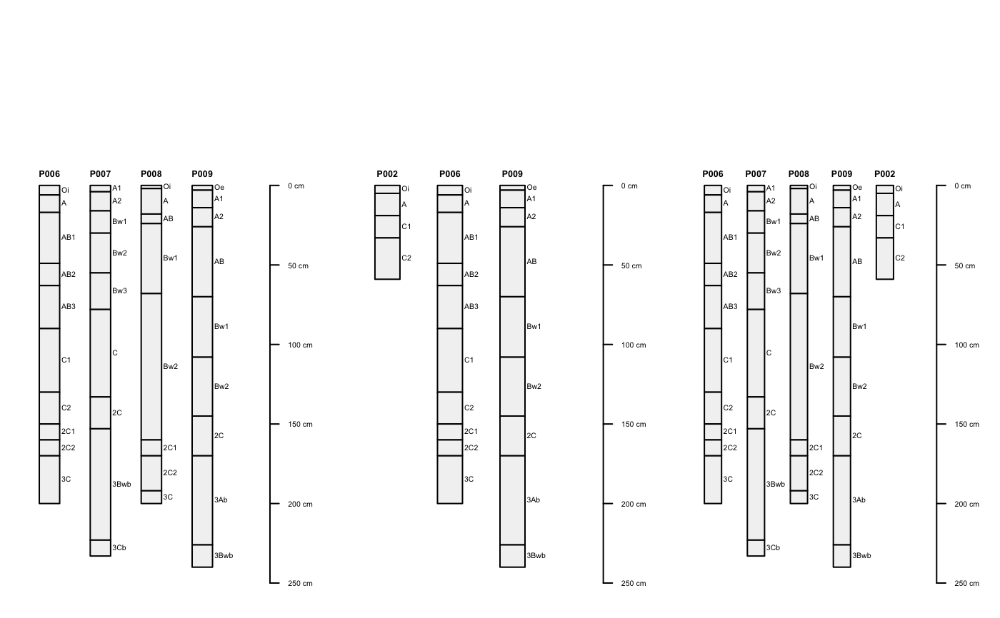
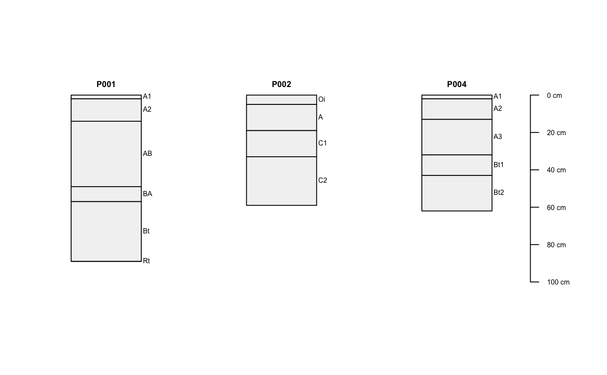
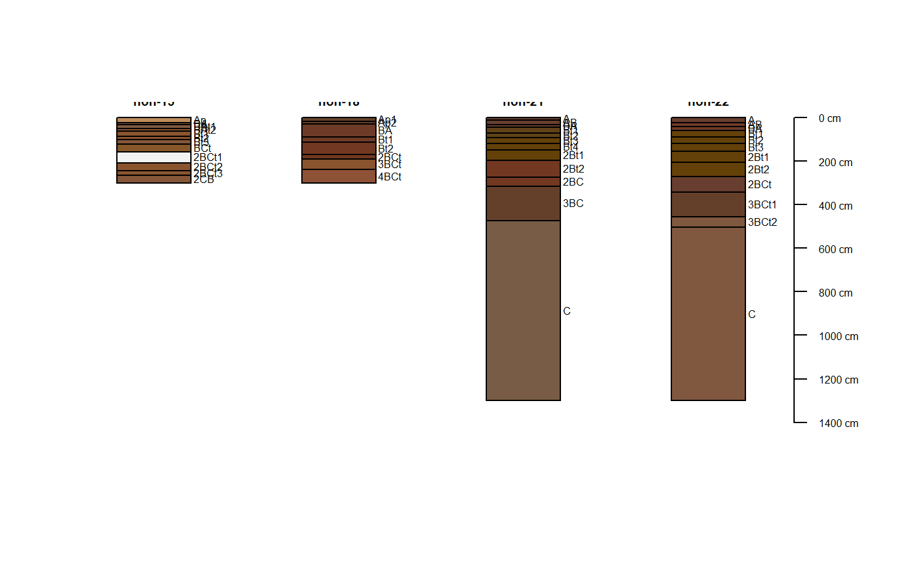

subsetProfiles-methods.RdThis function is used to subset SoilProfileCollection objects using either site-level or horizon-level attributes, or both.
signature(object = "SoilProfileCollection", s = 'character', h = 'character', ...)A SoilProfileCollection class object.
The s argument supplies a fully-quoted search critera for matching via site-level attributes. The h argument supplies a fully-quoted search criteria for matching via horizon-level attributes. All horizons associated with a single horizon-level match (i.e. out of several, only a single horizon matches the search critera) are returned. See examples for usage.
# more interesting sample data data(sp2) depths(sp2) <- id ~ top + bottom site(sp2) <- ~ surface # subset by integer index, note that this does not re-order the profiles plot(sp2[1:5, ])#># generate an integer index via pattern-matching idx <- grep('modesto', sp2$surface, ignore.case=TRUE) plot(sp2[idx, ])#># generate in index via profileApply: # subset those profiles where: min(ph) < 5.6 idx <- which(profileApply(sp2, function(i) min(i$field_ph, na.rm=TRUE) < 5.6)) plot(sp2[idx, ])#>